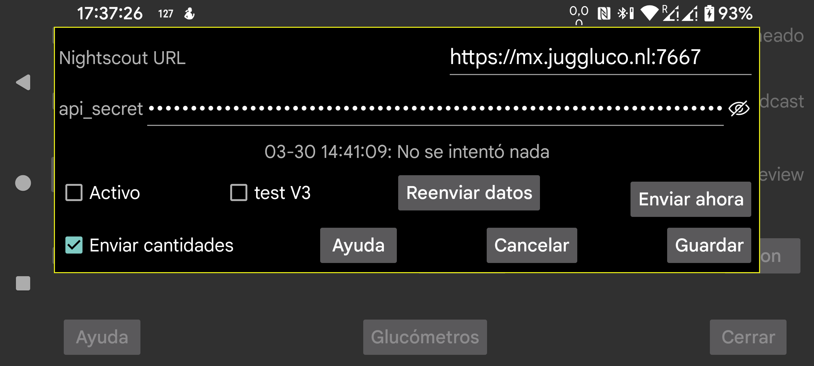

ar be de es fr hi nl pl ru sv tr uk uz zh en
En la mayoría de los casos también puedes usar el servidor web de Juggluco o juggluco-server. Solo unas pocas apps, que no hacen más que mostrar la página web de Nightscout, necesitan cgm-remote-monitor. Incluso AAPS y AAPSClient pueden usarse con el servidor web de Juggluco desde la versión 7.4.1.
Todos los valores de Stream se suben al servidor Nightscout en cuanto llegan. Si usas varios sensores, se suben los valores de todos ellos. Algunas apps, esferas o widgets de Garmin suponen que los valores están separados 5 minutos. Si reciben valores con un intervalo de 1 minuto, solo muestran el último quinto de la curva. Por eso el servidor web integrado en Juggluco separa los valores 5 minutos, salvo cuando interval=secs está configurado con un valor menor.
URL: la URL debe tener la forma https://host:puerto, por ejemplo https://minombre.herokuapp.com:6789.
Activo: activa el servidor.
test V3: hace que Juggluco use api/v3 para subir datos a Nightscout. No lo uses para subir a un servidor Nightscout que ya haya recibido cargas V1, ni envíes cargas V1 a un servidor que ya recibió V3. En lugar de api_secret debes indicar un Access Token con permiso para subir treatments y entries. Puedes crear ese token en la interfaz web de Nightscout, en Admin tools.
Enviar cantidades: también envía cantidades como tratamientos a Nightscout. Al tocar esta opción se abre un cuadro de diálogo donde puedes indicar para cada etiqueta qué significa en Nightscout. Estas definiciones se comparten con el servidor web de Juggluco (menú izquierdo → Ajustes → Intercambiar datos → Servidor web). Solo cuando todas las etiquetas estén definidas podrás activar Enviar cantidades. Si más tarde añades una etiqueta nueva, tendrás que definirla manualmente. Debido a un fallo de Nightscout, las inserciones en momentos anteriores o las eliminaciones solo se muestran después de añadir elementos con una hora más reciente. Por eso conviene enviar a Nightscout con menos frecuencia. Ahora esto ocurre cada vez que el usuario sale de Juggluco apagando la pantalla o pasando a otra app.
Reenviar datos: vuelve a subir todos los datos al servidor Nightscout.
Enviar ahora: normalmente los datos se envían inmediatamente cuando llegan desde el sensor o desde una conexión clon. Pulsa este botón si un intento anterior falló por cualquier motivo.
La versión Wear OS de Juggluco 4.15.0 y posteriores también puede subir valores de glucosa a Nightscout. En casi todos los casos es mejor hacerlo desde una versión de Juggluco en un teléfono o tableta, o desde Juggluco-server en un equipo. Esto consume batería, especialmente si no puede conectarse al servidor Nightscout, así que es mejor desactivar Activo si no hay una conexión fiable.
Hay dos mensajes de error que suelen causar confusión.
Si el mensaje de error es upload failure: y no aparece nada más, las causas posibles son:
Si aparece upload failure: java.io.FileNotFoundException : NIGHTSCOUTURL/api/v1/entries, aquí NIGHTSCOUTURL representa la URL del servidor indicada tras Nightscout URL.
Esto suele deberse a una de estas causas:
api_secret es incorrecto.NIGHTSCOUTURL contiene una ruta que no debería estar ahí. Por ejemplo, la URL correcta es https://ahost.org:8887 y has introducido https://ahost.org:8887/extra.